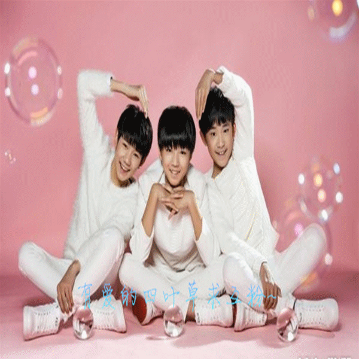

稚气的少年，梦想之花在未来盛开
三小只追梦之旅
这样的三小只你知道吗？
TFBOYS是北京时代峰峻文化艺术发展有限公司推出的少年偶像组合，由王俊凯、王源和易烊千玺3名成员组成，2013年8月6日正式出道，2013年10月18日发行出道EP《Heart梦·出发》。
2014年3月13日，发行单曲《魔法城堡》。4月15日，荣获第二届音悦V榜年度盛典“内地最具人气歌手奖”和“音悦直播人气歌手奖”。8月3日，举行出道一周年粉丝答谢会。8月16日，单曲《青春修炼手册》MV上线，破5项V榜吉尼斯，夺取内地音乐榜冠军宝座。11月17日，发行迷你专辑《青春修炼手册》。12月6日，荣获尖叫2015爱奇艺之夜“最受欢迎组合奖”和“年度金曲奖”。
2015年3月30日，荣获东方风云榜音乐盛典“最佳组合”、“年度风云组合“两项大奖。4月11日，荣获音乐V榜年度盛典“内地最具人气歌手”、“内地年度风向艺人”和“音悦直播人气歌手”三项大奖。4月13日，荣获音乐风云榜年度盛典“年度最受欢迎内地组合”和“年度最受欢迎歌曲”大奖。8月15日，举行出道两周年粉丝见面会 。9月24日，确认参演电视剧诛仙《青云志》。10月22日，加盟湖南卫视《全员加速中》 。12月29日，发行迷你专辑《大梦想家》。
2016年2月7日，登上中央电视台春节联欢晚会，表演儿童节目《幸福成长》。4月9日，荣获第16届音乐风云榜年度最受欢迎组合奖。4月10日，荣获第四届音乐V榜内地最佳组合奖。
演艺经历
2011年，队员王俊凯和王源陆续翻唱了队员王俊凯和王源陆续翻唱了《一个像秋天，一个像夏天》、《当爱已成往事》等。其中《一个像夏天一个像秋天》与《洋葱》分别得到了原唱范玮琪与原创五月天阿信的转发，并被台湾中天新闻报道。
2013年，8月6日， 北京时代峰峻文化艺术发展有限公司推出组合——TFBOYS并发布组合形象宣传片《十年》， 组合由王俊凯、王源和易烊千玺组成，队长为王俊凯。10月18日，正式发行出道EP《Heart梦·出发》。11月，由王源主持，TFBOYS和TF家族成员参演的家族综艺《源文在哪》、《TF少年GO》开播。11月，王俊凯、王源翻唱歌曲《董小姐》12月24日，成员王俊凯与王源应邀参加日月光中心举办的圣诞夜活动。
2014年，3月13日 发行马年首支单曲《魔法城堡》。4月3日至6日，TFBOYS应邀客串参演厄尼·巴巴拉什执导，尚格云顿主演的《致命追击》，赴广州参与拍摄。4月15日， 第二届音悦V榜年度盛典在北京举行，TFBOYS获得中国内地最具人气歌手奖和音悦直播人气歌手奖，这也是TFBOYS首次亮相中国国内的颁奖典礼。7月3日， 青春电影《我就是我》片方宣布由TFBOYS演唱电影的主题曲《想唱就唱》，作为电影第二弹主题曲。7月3日， 动画电影《洛克王国3：圣龙的守护》发布了TFBOYS演唱影片主题曲《魔法城堡》。7月4日， 天娱传媒发行TFBOYS组合版本《想唱就唱》。7月9日，央视大型励志少年才智秀《少年中国强》发布会在北京举行，与王俊凯、易烊千玺一起被邀成为该节目的特别代言人，并献唱节目主题曲《HEART》。8月18日，《青春修炼手册》MV正式发布。8月27日，TFBOYS受邀参加了华谊兄弟和腾讯共同举办的星影联盟发布会。9月13日，TFBOYS共同参与录制的首档偶像成长类全纪录节目《TFBOYS偶像手记》在爱奇艺晚8点全网首播。
2015年，TFBOYS组合参与中央电视台“心连心”艺术团赴古田镇进行慰问演出，节目将于1月10日晚19:30，在中央电视台综艺频道播出。8月28日，周杰伦为TFBOYS组合量身打造的新单曲《剩下的盛夏》首发。2015年9月，TFBOYS王俊凯、王源、易烊千玺强势加盟电视剧《诛仙青云志》。
2016年2月，参加2016年中央电视台春节联欢晚会，表演儿童节目《幸福成长》。2016年5月12日，央视“CCTV看点”官微PO出TFBOYS的照片，宣布2016央视六一晚会正式启动，TFBOYS组合将会在儿童节登台献唱。三小只身穿帅气西装拱手作揖，十分可爱![15]6月11日，“城市至尊音乐盛典”举行，TFBOYS荣获第9届城市至尊音乐榜年度听众最爱团体及年度20大金曲两项大奖，王源凭借原创歌曲《因为遇见你》荣获年度听众最爱新人大奖 。6月13日，组合成员易烊千玺凭借电影《小王子》配音，斩获首届微博电影之夜影人榜冠军。7月11日，由TFBOYS领衔主演的网络剧《超少年密码》在乐视视频上线 。8月5日，TFBOYS全新单曲《是你》正式发布 。8月6日，TFBOYS三周年北京见面会在五棵松体育馆举行 。
2017年1月27日在中央电视台春节联欢晚会与王子文、杨紫等参演歌舞《美丽中国年》。
社会活动
2014年6月，TFBOYS组合队长王俊凯和成员王源、易烊千玺开始了倡导和开展“关注唇腭裂儿童”的公益活动。TFBOYS向社会发出“让唇腭裂儿童绽放幸福微笑”的呼吁，因此希望通过自身的影响力去感染社会，传递爱心、传播正能量。活动现场，中国人口福利基金会领导授予TFBOYS组合“幸福微笑”救助唇腭裂儿童公益项目爱心大使的称号，肯定他们在公益事业上做出的表率和努力，也为这场充满浓浓爱心的公益活动画上完美的句号。
2014年8月21日，TFBOYS接受冰桶挑战为公益献爱心，成员三人呼吁大家关爱渐冻人，接受冰桶挑战并捐款。8月，TFBOYS支持雅客 “爸爸在哪儿”大型亲子公益活动，呼吁更多社会团体、个人能够关注到留守儿童的亲情缺失，为留守儿童能够在暑、寒假和父母团聚出力。
社会评价
TFBOYS成员与日韩男子团体比起来更接地气，像邻家小男孩，略显稚气的唱功依然会被定义为“小朋友”角色。在经过公司系统培训之后，行为模式与艺人相差无几，体现出超龄的成熟。TFBOYS的最大特点就是新鲜年轻，他们的歌曲制作上未必精良，但他们已经不再只歌唱“太阳花”和红领巾，他们唱着00后的感情观，这些歌曲的创作和成年歌手的歌曲并无大致，但基本上他们歌唱的还是健康向上的正能量，还有些情窦初开式的青涩告白。
人物事件
2015年2月11日小年夜，TFBOYS将在央视网2015CCTV网络春晚上与大家见面，除了表演歌舞以外，还要来一场变装大秀！
获得荣誉
荣获2014年第二届音乐V榜年度盛典音乐直播人气歌手
2014年荣获第二届音乐V榜年度盛典内地最具人气奖